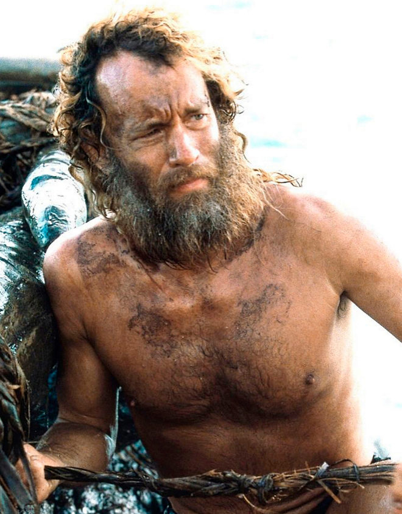

Cúando hablamos de grandes fracasos del cine podemos hablar con mucha fácilidad de José "a secas", como director no tiene un gran repertorio y no hace películas espectaculares, para que engañarnos.
Este año quería usar un nuevo papel de redacción con vistas al mar, comentaba el director, un papel bien "fresco" dónde se tratan temas cómo por ejemplo: el que solo estoy, la posibilidad de quedarse sin cigarros en medio de una dura tormenta o grandes preguntas de la humanidad cómo el ¿Quién soy y que hago aquí?.
